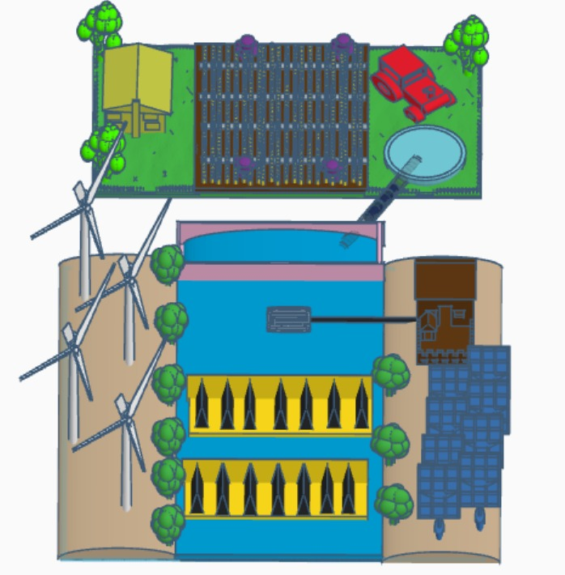

My name is Arshnoor Singh and the group members are Neeraj, Shiv, Gurjot, Harshith, and Karthik. We, THE INNOVATIVE GEEKS, have made a project which not only focuses on how to reduce the effect of floods but also how it can be used for the welfare of the people.

FEATURES:
We have added a water gate that can be used in multiple situations like flood control, creating reservoirs and dams, and waterway diversions. The watergate is a rapid, self-deploying barrier using the weight of the water to reduce the flow of water during floods. It helps to reduce time and effort.
In addition, we have added a Water wheel that represents the simplest utilization of the energy from flowing water. It is a device that drives mechanical processes and produces energy as well as agro produce.
We have added windmills and solar panels. Windmills will help pump water out of swampy areas as well as low-lying ground that would help to prevent flooding. As Solar panels are waterproof and can withstand heavy amounts of water It would not only benefit economically but would also provide clean energy.
To this, there is an excess water storage container. to this device, the excessive water will be stored. It will not only help to store and use the excess water but also lead to sustainable development.
We have added a water pipe with a filter inside due to which the excess water stored in the container will be filtered and transferred to the nearby agricultural land. It will help the residents to obtain fresh water and can also be used for agricultural land. It would be economically helpful as well.
BENEFITS:
More people will become acquainted with the topic and this will create their path towards becoming sustainable environment leaders.
Viewers would be able to interpret information on how to reduce the effect of floods in their own convenient ways.
It will also help youth to get awareness about natural disasters and how they can create a solution that would be helpful for the welfare of people.
These are the reasons why we believe that our solution is innovative and would definitely create an impact.